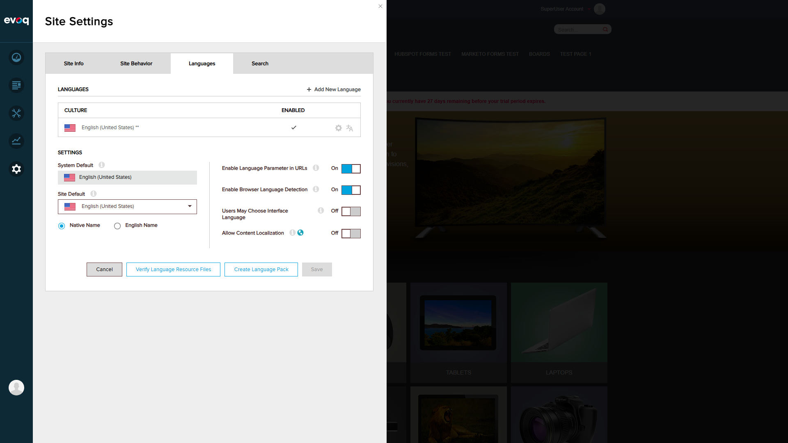

Scenario 1: Verify Resource String Loading PASS
What was tested: Verify that localization resource strings are loaded from the server and displayed correctly in the UI.
Steps taken:
- Navigated to http://localhost:8081
- Logged in as SuperUser (host/Pass123456)
- Accessed Settings > Connectors
- Clicked on Google Analytics 4 "Edit" button
- Observed UI strings displayed in the form
Results: All resource strings loaded correctly from ContentGoogleAnalytics.resx
| Resource Key | Expected Value | UI Display | Status |
|---|
| Ga4ID | Measurement ID: | Measurement ID: | PASS |
| TrackAdministrators | Track for Administrators: | Track for Administrators: | PASS |
| btnDelete | Delete Connection | Delete Connection | PASS |
| Cancel.Text | Cancel | Cancel | PASS |
| Save.Text | Save | Save | PASS |

Scenario 2: Verify localStorage Caching of Localization Data PASS
What was tested: Verify that localization data is cached in localStorage with proper key naming and timestamps for expiration.
Steps taken:
- Opened browser developer tools
- Executed JavaScript to examine localStorage
- Checked for localization cache entries
- Verified cache key format and data structure
Results: localStorage caching is working correctly.
Cache Key Found: Connections.GoogleAnalytics.en-US.Table
{
"btnDelete": "Delete Connection",
"ConnectorName": "Google Analytics 4 Core Connector",
"TrackAdministrators": "Track for Administrators:",
"TrackingCodeFormat.ErrorMessage": "Tracking Code Cannot Be Empty",
"Ga4ID": "Measurement ID:",
"timestamp": 1767097969329
}
Cache Behavior:
- Cache key follows pattern:
Connections.[name].[culture].Table
- Timestamp included for 1-hour expiration (60*60*1000 ms)
- Falls back to server API if cache expired or missing

Scenario 3: Test Fallback to Default Language (en-US) PASS
What was tested: Verify that the system correctly falls back to the default language (en-US) when no other languages are available.
Steps taken:
- Navigated to Settings > Site Settings > Languages
- Verified available languages
- Checked System Default and Site Default settings
- Verified current culture via JavaScript
Results:
| Setting | Value |
|---|
| Installed Languages | English (United States) only |
| System Default | English (United States) |
| Site Default | English (United States) |
| Current Culture (JavaScript) | en-US |
| Browser Language Detection | Enabled |
Observation: Since only en-US is installed, the system correctly defaults to it. The localization framework properly handles this single-language scenario.

Scenario 5: Verify All UI Strings Are Localized PASS
What was tested: Comprehensive verification that all Google Analytics connector UI strings are properly localized.
Steps taken:
- Reviewed ContentGoogleAnalytics.resx file contents
- Reviewed authorize.js localization loading logic
- Reviewed authroize.htm template bindings
- Compared resource definitions with UI display
Complete Localization String Mapping:
| Resource Key | Value (en-US) | Used In |
|---|
| Auth.Text | Authorization | Header labels |
| AuthorizationError.Text | An error occurred during the authentication process... | Error messages |
| Authorize.Text | Authorize Google Analytics Integration | Authorization button |
| ChangeAuthorize.Text | Change Google Analytics Integration | Settings panel |
| ChooseAccount.Text | (Choose an account) | Account dropdown placeholder |
| ChooseProfile.Text | (Choose a profile) | Profile dropdown placeholder |
| ChooseDataStream.Text | (Choose a data stream) | Data stream dropdown placeholder |
| ChooseWebProperty.Text | (Choose a web property) | Web property dropdown placeholder |
| GoogleAnalyticsIntegration.Text | Google Analytics Integration | Panel title |
| IntegrationSettings.Text | Integration Settings | Settings header |
| IntegrationSettingsTitle.Text | Google Analytics Integration Settings | Settings title |
| Unlink.Text | Unlink Google Analytics Integration | Disconnect button |
| UnlinkConfirm.Text | Are you sure want to remove the Google Analytics Integration? | Confirmation dialog |
| WebProperty.Text | Web Property | Dropdown label |
| ConnectToGA.Text | Sign in with Google | Connect button |
| Cancel.Text | Cancel | Cancel button |
| Disconnect.Text | Disconnect | Disconnect button |
| Save.Text | Save | Save button |
| CheckingStatus.Text | Checking Google Analytics Authorization status... | Loading indicator |
| DataStream.Text | Data Stream | Dropdown label |